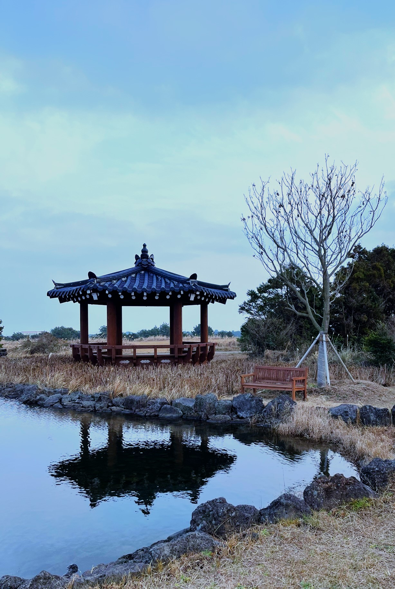

My teaching philosophy centers the core values of confidence, curiosity, and autonomy: I wish for every student to leave my classroom feeling curious about the humanistic structures of the world, and confident in their ability to identify, deconstruct, and describe any set of observations or perspectives that their curiosity leads them to. I have developed a teaching practice with three main goals, which all serve to cultivate the values of confidence, curiosity, and autonomy in my students. These goals are:
I implement a number of teaching strategies to achieve these goals, and appeal to Student Evaluations of Teaching Surveys (SETS) and other forms of feedback to inform and improve my pedagogical practice.
I am currently employed as a K-12 Private Tutor at AJ Tutoring, specializing in Statistics, K-8 Academics, and high school/undergraduate level linguistics training upon request. You can find me at the Los Gatos Blvd location. To schedule, please contact AJ Tutoring client services directly.